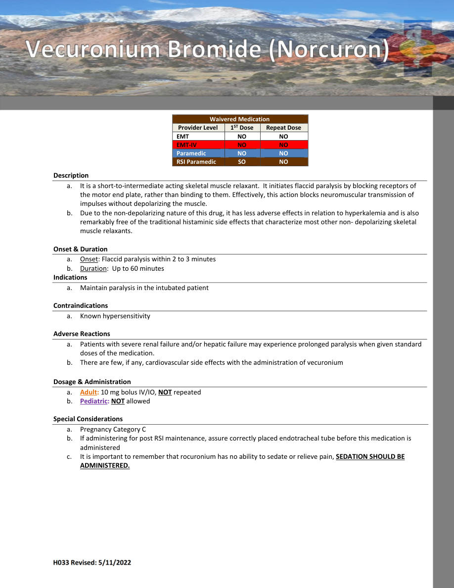
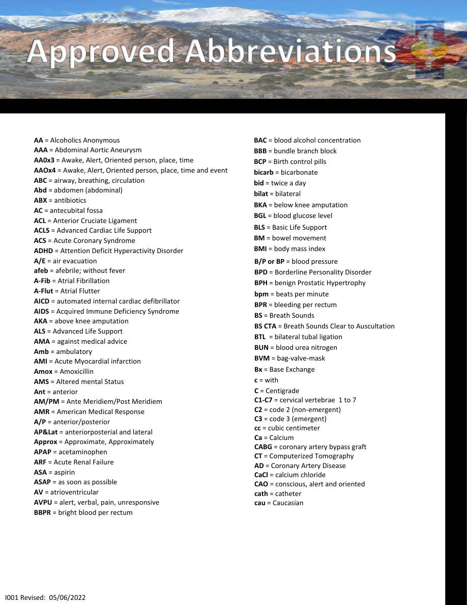
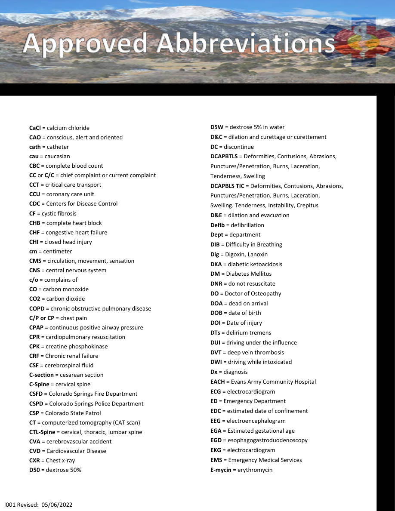
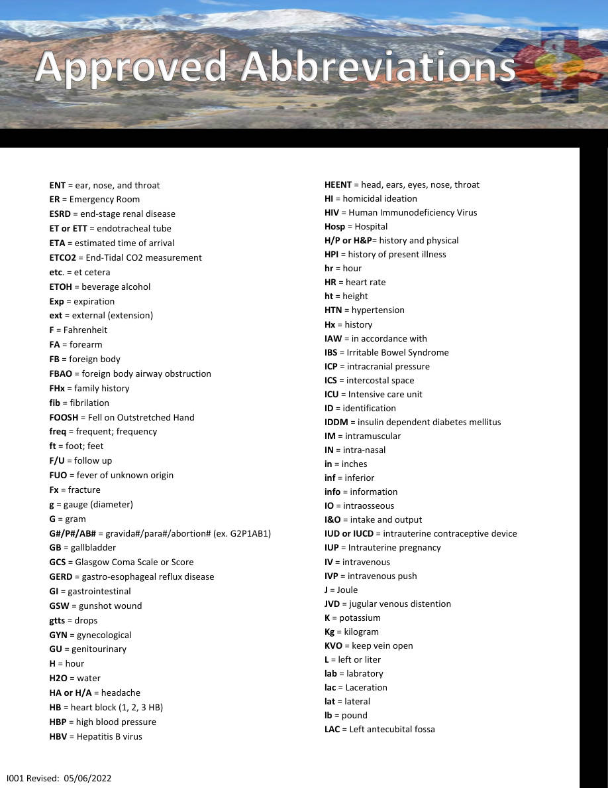

H033 — Waivered Medication
Medications • Pages 139-142
Use the scanned pages to see the official tables/charts/algorithms. The extracted text is there for copy/paste and searchability.
Extracted text (page 139)
H033 Revised: 5/11/2022 Waivered Medication Provider Level 1ST Dose Repeat Dose EMT NO NO EMT‐IV NO NO Paramedic NO NO RSI Paramedic SO NO Description a. It is a short‐to‐intermediate acting skeletal muscle relaxant. It initiates flaccid paralysis by blocking receptors of the motor end plate, rather than binding to them. Effectively, this action blocks neuromuscular transmission of impulses without depolarizing the muscle. b. Due to the non‐depolarizing nature of this drug, it has less adverse effects in relation to hyperkalemia and is also remarkably free of the traditional histaminic side effects that characterize most other non‐ depolarizing skeletal muscle relaxants. Onset & Duration a. Onset: Flaccid paralysis within 2 to 3 minutes b. Duration: Up to 60 minutes Indications a. Maintain paralysis in the intubated patient Contraindications a. Known hypersensitivity Adverse Reactions a. Patients with severe renal failure and/or hepatic failure may experience prolonged paralysis when given standard doses of the medication. b. There are few, if any, cardiovascular side effects with the administration of vecuronium Dosage & Administration a. Adult: 10 mg bolus IV/IO, NOT repeated b. Pediatric: NOT allowed Special Considerations a. Pregnancy Category C b. If administering for post RSI maintenance, assure correctly placed endotracheal tube before this medication is administered c. It is important to remember that rocuronium has no ability to sedate or relieve pain, SEDATION SHOULD BE ADMINISTERED.
Extracted text (page 140)
AA = Alcoholics Anonymous AAA = Abdominal Aortic Aneurysm AA0x3 = Awake, Alert, Oriented person, place, time AAOx4 = Awake, Alert, Oriented person, place, time and event ABC = airway, breathing, circulation Abd = abdomen (abdominal) ABX = antibiotics AC = antecubital fossa ACL = Anterior Cruciate Ligament ACLS = Advanced Cardiac Life Support ACS = Acute Coronary Syndrome ADHD = Attention Deficit Hyperactivity Disorder A/E = air evacuation afeb = afebrile; without fever A-Fib = Atrial Fibrillation A-Flut = Atrial Flutter AICD = automated internal cardiac defibrillator AIDS = Acquired Immune Deficiency Syndrome AKA = above knee amputation ALS = Advanced Life Support AMA = against medical advice Amb = ambulatory AMI = Acute Myocardial infarction Amox = Amoxicillin AMS = Altered mental Status Ant = anterior AM/PM = Ante Meridiem/Post Meridiem AMR = American Medical Response A/P = anterior/posterior AP&Lat = anteriorposterial and lateral Approx = Approximate, Approximately APAP = acetaminophen ARF = Acute Renal Failure ASA = aspirin ASAP = as soon as possible AV = atrioventricular AVPU = alert, verbal, pain, unresponsive BBPR = bright blood per rectum BAC = blood alcohol concentration BBB = bundle branch block BCP = Birth control pills bicarb = bicarbonate bid = twice a day bilat = bilateral BKA = below knee amputation BGL = blood glucose level BLS = Basic Life Support BM = bowel movement BMI = body mass index B/P or BP = blood pressure BPD = Borderline Personality Disorder BPH = benign Prostatic Hypertrophy bpm = beats per minute BPR = bleeding per rectum BS = Breath Sounds BS CTA = Breath Sounds Clear to Auscultation BTL = bilateral tubal ligation BUN = blood urea nitrogen BVM = bag-valve-mask Bx = Base Exchange c = with C = Centigrade C1-C7 = cervical vertebrae 1 to 7 C2 = code 2 (non-emergent) C3 = code 3 (emergent) cc = cubic centimeter Ca = Calcium CABG = coronary artery bypass graft CT = Computerized Tomography AD = Coronary Artery Disease CaCl = calcium chloride CAO = conscious, alert and oriented cath = catheter cau = Caucasian I001 Revised: 05/06/2022
Extracted text (page 141)
CaCl = calcium chloride CAO = conscious, alert and oriented cath = catheter cau = caucasian CBC = complete blood count CC or C/C = chief complaint or current complaint CCT = critical care transport CCU = coronary care unit CDC = Centers for Disease Control CF = cystic fibrosis CHB = complete heart block CHF = congestive heart failure CHI = closed head injury cm = centimeter CMS = circulation, movement, sensation CNS = central nervous system c/o = complains of CO = carbon monoxide CO2 = carbon dioxide COPD = chronic obstructive pulmonary disease C/P or CP = chest pain CPAP = continuous positive airway pressure CPR = cardiopulmonary resuscitation CPK = creatine phosphokinase CRF = Chronic renal failure CSF = cerebrospinal fluid C-section = cesarean section C-Spine = cervical spine CSFD = Colorado Springs Fire Department CSPD = Colorado Springs Police Department CSP = Colorado State Patrol CT = computerized tomography (CAT scan) CTL-Spine = cervical, thoracic, lumbar spine CVA = cerebrovascular accident CVD = Cardiovascular Disease CXR = Chest x-ray D50 = dextrose 50% D5W = dextrose 5% in water D&C = dilation and curettage or curettement DC = discontinue DCAPBTLS = Deformities, Contusions, Abrasions, Punctures/Penetration, Burns, Laceration, Tenderness, Swelling DCAPBLS TIC = Deformities, Contusions, Abrasions, Punctures/Penetration, Burns, Laceration, Swelling. Tenderness, Instability, Crepitus D&E = dilation and evacuation Defib = defibrillation Dept = department DIB = Difficulty in Breathing Dig = Digoxin, Lanoxin DKA = diabetic ketoacidosis DM = Diabetes Mellitus DNR = do not resuscitate DO = Doctor of Osteopathy DOA = dead on arrival DOB = date of birth DOI = Date of injury DTs = delirium tremens DUI = driving under the influence DVT = deep vein thrombosis DWI = driving while intoxicated Dx = diagnosis EACH = Evans Army Community Hospital ECG = electrocardiogram ED = Emergency Department EDC = estimated date of confinement EEG = electroencephalogram EGA = Estimated gestational age EGD = esophagogastroduodenoscopy EKG = electrocardiogram EMS = Emergency Medical Services E-mycin = erythromycin I001 Revised: 05/06/2022
Extracted text (page 142)
ENT = ear, nose, and throat ER = Emergency Room ESRD = end-stage renal disease ET or ETT = endotracheal tube ETA = estimated time of arrival ETCO2 = End-Tidal CO2 measurement etc. = et cetera ETOH = beverage alcohol Exp = expiration ext = external (extension) F = Fahrenheit FA = forearm FB = foreign body FBAO = foreign body airway obstruction FHx = family history fib = fibrilation FOOSH = Fell on Outstretched Hand freq = frequent; frequency ft = foot; feet F/U = follow up FUO = fever of unknown origin Fx = fracture g = gauge (diameter) G = gram G#/P#/AB# = gravida#/para#/abortion# (ex. G2P1AB1) GB = gallbladder GCS = Glasgow Coma Scale or Score GERD = gastro-esophageal reflux disease GI = gastrointestinal GSW = gunshot wound gtts = drops GYN = gynecological GU = genitourinary H = hour H2O = water HA or H/A = headache HB = heart block (1, 2, 3 HB) HBP = high blood pressure HBV = Hepatitis B virus HEENT = head, ears, eyes, nose, throat HI = homicidal ideation HIV = Human Immunodeficiency Virus Hosp = Hospital H/P or H&P= history and physical HPI = history of present illness hr = hour HR = heart rate ht = height HTN = hypertension Hx = history IAW = in accordance with IBS = Irritable Bowel Syndrome ICP = intracranial pressure ICS = intercostal space ICU = Intensive care unit ID = identification IDDM = insulin dependent diabetes mellitus IM = intramuscular IN = intra-nasal in = inches inf = inferior info = information IO = intraosseous I&O = intake and output IUD or IUCD = intrauterine contraceptive device IUP = Intrauterine pregnancy IV = intravenous IVP = intravenous push J = Joule JVD = jugular venous distention K = potassium Kg = kilogram KVO = keep vein open L = left or liter lab = labratory lac = Laceration lat = lateral lb = pound LAC = Left antecubital fossa I001 Revised: 05/06/2022
Scanned pages (tables/charts preserved)
Page 139 scan
Page 140 scan
Page 141 scan
Page 142 scan
